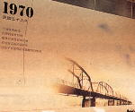
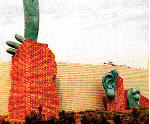
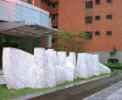

台灣公眾藝術的諸問題
呂清夫 撰文
一、對照台灣一九三○年代的兩件公眾藝術廣義而言，公共空間中的藝術品均可稱之為「公眾藝術」，至於「公共藝術」可能僅限於「百分比公共藝術計劃」（percentage for art programs）之下的作品。雖然在英語中「公眾」與「公共」可以是同一個字，但是此事並不妨礙本文的試做區分，何況日本設計學者柏木博曾認為，公共藝術可以追溯到過去的作品，如俄國構成主義那一批作品都可以列入。 故談到公眾藝術，在台灣可謂早已有之。我們在台北中山堂光復廳看到的黃土水作品「水牛群像」便是其中之一，它完成於一九三○年，其中充分地顯示了古典雕塑的理想，那就是希臘人所謂的「崇高的單純與靜謐的莊嚴」。這件作品對於不瞭解寫實真諦的造形藝術而言，應該是很好的借鏡。特別那些把人體模型看成寫實藝術者，顯然是誤解了寫實與普普間的不同，其實普普多少有點玩世不恭的傾向，而人體模型看成寫實藝術者往往欠缺某種幽默感。
故談到公眾藝術，在台灣可謂早已有之。我們在台北中山堂光復廳看到的黃土水作品「水牛群像」便是其中之一，它完成於一九三○年，其中充分地顯示了古典雕塑的理想，那就是希臘人所謂的「崇高的單純與靜謐的莊嚴」。這件作品對於不瞭解寫實真諦的造形藝術而言，應該是很好的借鏡。特別那些把人體模型看成寫實藝術者，顯然是誤解了寫實與普普間的不同，其實普普多少有點玩世不恭的傾向，而人體模型看成寫實藝術者往往欠缺某種幽默感。
 大約與「水牛群像」同時，台南縣的烏山頭也出現過一件公眾藝術「八田與一像」。這件作品在藝術界可能知者不多，卻不失其公眾藝術上的重要性。這主要因為它具有高度的公共性，它的建造主要是出自民眾自發的行動。據悉台灣一百年前的嘉南一帶還是類似沙漠地帶，後來幸虧八田與一這個水利官員，出來仗量、籌建水庫，那一帶才開始有了綠地，那就是現在的烏山頭水庫。這位日本官員學土木出身，雖然位階不高，但有工作狂，每天早出晚歸，摩頂放踵，跑遍台灣南北。在三十多歲已經仗量完了台灣的八、九十個水庫，據傳台灣現用水庫泰半是根據他的仗量去興建的。他在建好烏山頭水庫之後，適逢太平洋戰爭爆發，被派往南洋工作，途中被美軍炸死，惡耗傳來，他的愛妻外代樹（夫妻原來住在台南六甲）竟投烏山頭水庫自盡，似乎死也對水庫有一份深情。嘉南農田水利會曾在這件作品之旁提及：「為表彰其豐功偉績及對嘉南平原百萬農民之偉大貢獻，特於一九三一年七月八日建立本銅像以資紀念。」 二、公眾藝術定義的急進與保守台灣目前對於公共藝術的定義大致參考美國的做法，根據「開放空間文教基金會」的整理資料，國內學者的意見可歸納於下列數點：
大約與「水牛群像」同時，台南縣的烏山頭也出現過一件公眾藝術「八田與一像」。這件作品在藝術界可能知者不多，卻不失其公眾藝術上的重要性。這主要因為它具有高度的公共性，它的建造主要是出自民眾自發的行動。據悉台灣一百年前的嘉南一帶還是類似沙漠地帶，後來幸虧八田與一這個水利官員，出來仗量、籌建水庫，那一帶才開始有了綠地，那就是現在的烏山頭水庫。這位日本官員學土木出身，雖然位階不高，但有工作狂，每天早出晚歸，摩頂放踵，跑遍台灣南北。在三十多歲已經仗量完了台灣的八、九十個水庫，據傳台灣現用水庫泰半是根據他的仗量去興建的。他在建好烏山頭水庫之後，適逢太平洋戰爭爆發，被派往南洋工作，途中被美軍炸死，惡耗傳來，他的愛妻外代樹（夫妻原來住在台南六甲）竟投烏山頭水庫自盡，似乎死也對水庫有一份深情。嘉南農田水利會曾在這件作品之旁提及：「為表彰其豐功偉績及對嘉南平原百萬農民之偉大貢獻，特於一九三一年七月八日建立本銅像以資紀念。」 二、公眾藝術定義的急進與保守台灣目前對於公共藝術的定義大致參考美國的做法，根據「開放空間文教基金會」的整理資料，國內學者的意見可歸納於下列數點：
- 公共藝術要具有永久性，「要經過工程管理測試、建造許可、檢驗等正式的管制手續」。（王哲雄）
- 「公共藝術必須與建築師、景觀建築師、工程師等其他專業人士協同合作。」（黃健敏）
- 公共藝術每一個程序「皆充滿民眾參與的契機，所以公共藝術是民眾參與的藝術創作」。（黃健敏）
- 「雕塑絕對不是公眾藝術的主流，公眾藝術沒有設定的畛域來侷限創作的內容。」（黃健敏），公共藝術「一定要和當地文化或歷史進展有密切的關係」、「要與當地自然環境的元素配合」、「要配合當地的人文、社會活動」。（李如儀）
自然，各領域的學者也都有其特殊的看法，例如管理學者郭瑞坤認為，教育宣導與解說十分重要，並指出「解說設施亦可成為公眾藝術的一環」。都市設計學者林欽榮則認為：「冀望透過『公共藝術』此一興起的新觀念，且業經立法在案擬將採強制與獎勵並行的環境藝術建設計劃，再加上『都市設計』此一即將立法的都市環境規劃設計制度，……則或對當前台灣都市景觀的改善暨都市公共空間品質之改造，能有關鍵性之影響。」讓我們看看台灣所仿效的美國公共藝術又是如何。波士頓當代美術研究所（institute of contemporary art ）對公共藝術的定義比較寬鬆，他們說：「公共藝術的定義是由人們能否接近它來決定」，「普通談到公共藝術乃是指戶外的藝術」。哥定（a.goddin）曾在「美國藝術」（art in america）雜誌上提出兩個定義：「第一、公共藝術訴諸廣泛的觀眾，常係由它的規模與設置狀況來決定。第二，它處理的是具有認知可能性的社會意義的主題。（所謂認知可能性是指風格與主題並非曖昧的、『個人的』東西）」紐約市藝術協會的公共藝術委員會會長弗利曼（d.freedman）在其「公共雕塑」一文中(public sculpture)所定的基準是：第一，具有高度的審美水準，第二，規模，第三，與公眾的關係。一九七四年「波士頓當代美術研究所」曾經舉辦過「公共藝術研討會」，發言者與參與者遍及藝術家、建築師、財經界人士、及美術機構的成員。其中導演、製作人、音樂家、設計家t.卡留認為公共藝術的定義應該由大眾來下，並說「作為對象的藝術已經死亡」﹐「作為過程的藝術一直都被忽略」。藝術學者羅比妮特（m.a.robinette）則解釋說卡留是為了指出：「藝術的形態正在改變，作為對象的藝術必然要被其他新型的藝術、如公共藝術所瓜分。」但這個研討會中的藝術家都認為，政府的資助對於公共藝術相當重要。日本設計學者柏木博曾注意到「大眾關心的藝術」（a.raven： art in the public interest）一書中的觀點，亦即八十年代美國「國家藝術基金」的公共藝術品雖然增加，但是另外一方面，各種形式的街頭藝術、電視影像、page art、海報、壁畫也都處處可見，由此也使公共藝術的面貌受到根本的改變。美國公共藝術的龍頭「公共服務署」（簡稱gsa）為擴張公共藝術的風格，已經導入了新的形式，這包括地景作品、環境雕塑、光的藝術、動力藝術、各種媒材的壁畫等。他們早在建築物設計階段，便加緊努力去展開公共藝術計劃。但從中外學者的各種詮釋之中，吾人可以看出，大家最共同的看法是必須是大眾可以理解或接受的東西，公共藝術對大眾來說，雖未必是「好之者、樂之者」，但起碼必須是「知之者」。其次，促進環境改善與包含最新媒體如錄影藝術之類，也各有四個學者認為是一個要項。對於公共藝術的「不可移動性」多半為國內學者的看法，其他學者並未明顯有此一主張，反之，像a.雷文那樣把最新媒體都包括進去，更無法適用「不可移動性」。 三、台灣公共藝術示範（實驗）計畫的美麗與哀愁
台灣近年的公共藝術有如雨後春筍，但也存在不少值得注意的問題。為了文化藝術的長遠發展，也為了生活空間的品質向上，對它的深入研究實在刻不容緩。台灣最近設置的公共藝術最醒目的首推以文建會的「公共藝術示範（實驗）計劃」、「台中縣校園雕塑藝術建置」、及「台北市環境公共藝術市創作展」等案例。其中徵選十分用心的台北偏向環境改造，相當重視品質的台中縣偏向雕塑創作，只有文建會的專案最為多樣，最具百分比概念，最具討論空間。文建會的專案中，現在最少有九個點已經成為定案，台北市捷運局的雙連站壁畫則早已完成（見右圖，但不屬於「環境公共藝術市創作展」）。
在這些案例中，可能以嘉義文化中心、台南市停車場（見左圖）、台北市捷運雙連站較為理想，因為整件作品具有統一的風格，而且範疇相當多樣，包括立體造形、圓雕裝飾牆、壁畫等各領域，同時它們大致都能把錢花在刀口上，用在藝術品上的經費比例大約都在65%至80%之間。新竹市、花蓮縣、高雄縣三地的文化中心本來設計的也都不錯，只可惜基地都需要改造，以致留給藝術品的經費相當有限。
 台東原住民文化會館、交通部運輸研究所則有一部份作品較難列入公共藝術，而屬於建築的後續工程。如原住民文化會館的大門柱樑木雕、交通部運研所（見左、右圖）的建築物打燈都不是自足的公共藝術。只是原住民文化會館設計的相當有風格，交通部運研所的雕塑如果包含第二優先以下的作品，彼此就難以協調。至於雕塑作品之間更難協調的案例應推屏東運動公園、與埔里藝文活動中心，兩地各含七件風格迥異的作品，所以很難看出是同一期的規劃。目前台灣公共藝術最大的問題可能在於定義上面，由於定義不清，常常導致各說各話，乃至便宜行事。例如現成藝術品自然可以作為公共藝術，但是如果到處都使用現成的作品，而沒有特地為基地而設計的作品，便需要設法加以扭轉，甚至以特地設計者為優先考慮。同時公共藝術如在一件以上，應切實顧及彼此的協調，使整體不失為一件大型作品。又如公共藝術雖可以包含空間設計如地景藝術、景觀設計、乃至廣場設計，但是如被擴大解釋，變成基地改造、工程施工都包括在內，那麼公共藝術的經費將被蠶食殆盡。所以，公共建築或空間的後續工程、或修飾亦不應列入公共藝術。至於公共藝術如為空間設計及其他功能設計則應確實審查是否為一件藝術作品。而公共藝術的精義應在於具有獎助文化藝術發展的性質，民眾參與亦基於同樣考量，以提昇民眾的審美素養。
原載1997.6.帝門藝術教育基金會編「公共藝術研習會實錄」
台東原住民文化會館、交通部運輸研究所則有一部份作品較難列入公共藝術，而屬於建築的後續工程。如原住民文化會館的大門柱樑木雕、交通部運研所（見左、右圖）的建築物打燈都不是自足的公共藝術。只是原住民文化會館設計的相當有風格，交通部運研所的雕塑如果包含第二優先以下的作品，彼此就難以協調。至於雕塑作品之間更難協調的案例應推屏東運動公園、與埔里藝文活動中心，兩地各含七件風格迥異的作品，所以很難看出是同一期的規劃。目前台灣公共藝術最大的問題可能在於定義上面，由於定義不清，常常導致各說各話，乃至便宜行事。例如現成藝術品自然可以作為公共藝術，但是如果到處都使用現成的作品，而沒有特地為基地而設計的作品，便需要設法加以扭轉，甚至以特地設計者為優先考慮。同時公共藝術如在一件以上，應切實顧及彼此的協調，使整體不失為一件大型作品。又如公共藝術雖可以包含空間設計如地景藝術、景觀設計、乃至廣場設計，但是如被擴大解釋，變成基地改造、工程施工都包括在內，那麼公共藝術的經費將被蠶食殆盡。所以，公共建築或空間的後續工程、或修飾亦不應列入公共藝術。至於公共藝術如為空間設計及其他功能設計則應確實審查是否為一件藝術作品。而公共藝術的精義應在於具有獎助文化藝術發展的性質，民眾參與亦基於同樣考量，以提昇民眾的審美素養。
原載1997.6.帝門藝術教育基金會編「公共藝術研習會實錄」回上頁
回首頁